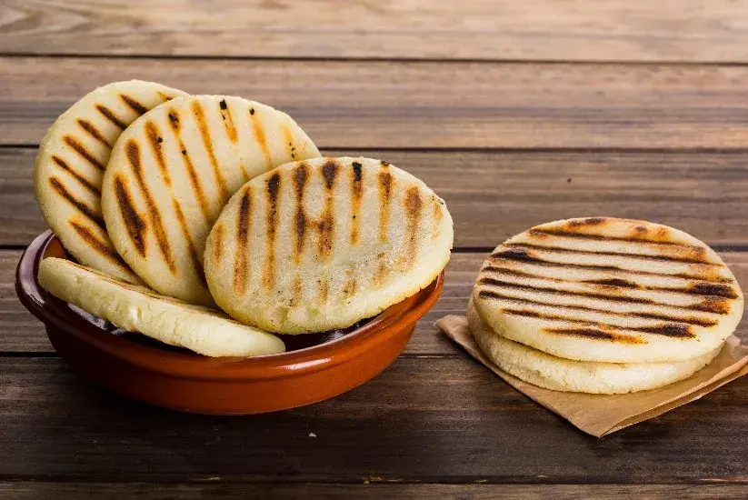

Arepa Paisa

Description
Arepas are a traditional Colombian flatbread made from ground cornmeal. Crunchy on the outside,
soft and doughy on the inside, with a buttery, sweet, delicious taste, it's impossible
to have just one. The arepa is very versatile, with the option to stuff with cheese.
Arepa paisas, or arepa antioqueña blancas, covered here, are considered
the most classic. They are great by themselves, served alongside Colombian chorizo, steak/chicken/pork,
or topped with butter/cheese.
Ingredients
- 1 cup pre-cooked white arepa flour (white corn meal)
- 1 cup warm water
- 2 tablespoons softened butter
- salt (to the chefs' wishes)
Steps
- Mix arepa flour, warm water, softened butter, and salt in a large bowl.
- Knead together until the entire mixture has a very soft, doughy consistency.
Add more water if the mixture is too dry, but more arepa flour if it is too watery.
- Form medium to small balls which fit in your hand, and flatten out to desired thickness
with a flat palm on any flat surface.
- Spray griddle with cooking spray and turn stove to medium heat.
- Add arepas, one by one, once griddle is heated, and cook each until both sides are golden
or toasted to taste.
Home